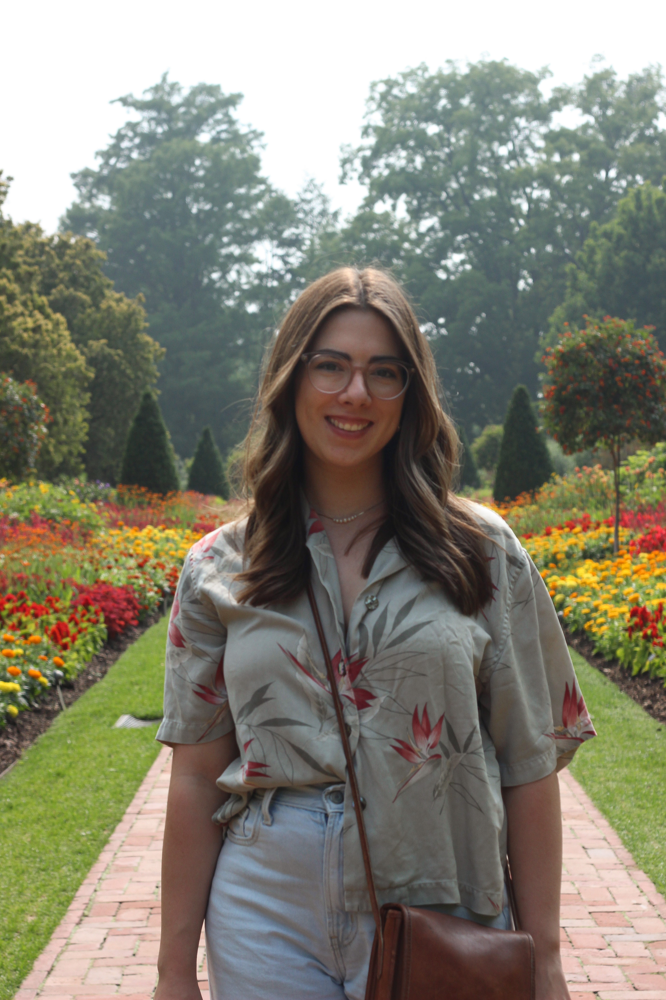

Charis Cochran
PhD, Electrical Engineering · Drexel University
Brooklyn, NY

I recently completed my PhD in the Music Entertainment Technology Lab at Drexel University, advised by Dr. Youngmoo Kim. My dissertation, Leveraging Diffusion Models for Predominant Instrument Generation and Recognition, sits at the intersection of machine learning and music — designing and studying diffusion-based models for instrument recognition, generation, and timbre understanding.
Before my PhD, I studied physics and mathematics at Trevecca Nazarene University and spent summers doing condensed matter physics research at the National MagLab at Florida State University.
I also care deeply about building community and making technical fields more accessible — through K–12 outreach, mentorship, and years of work leading Drexel's Graduate Women in Science and Engineering.
I am actively on the job market and looking for industry, academic, and postdoc positions starting 2026 — feel free to reach out! I'm also always open to collaboration, especially in music and audio research and STEM education.
Research Interests
Recent
- May 2026 Presenting at ICASSP 2026 — Leveraging Diffusion U-Net Features for Predominant Instrument Recognition
- Spring 2026 Teaching T480/580: Musical AI at Drexel University in collaboration with Smule
- Mar 2026 Successfully defended PhD dissertation — Leveraging Diffusion Models for Predominant Instrument Generation and Recognition
- Dec 2025 Presented at NeurIPS 2025 AI for Music Workshop; received Student Registration Grant
- May 2025 Received the Drexel Common Good Award and Graduate Community Impact Award
- Jul 2024 Invited talk at CCRMA, Stanford University — An Exploration of Timbre in Context
- Nov 2024 Student Registration Grant, ISMIR 2024; two papers presented at Late-breaking/Demo
- Jan–Jun 2024 Visiting Research Advisor at Smith College, leading undergraduate ML research during faculty sabbatical